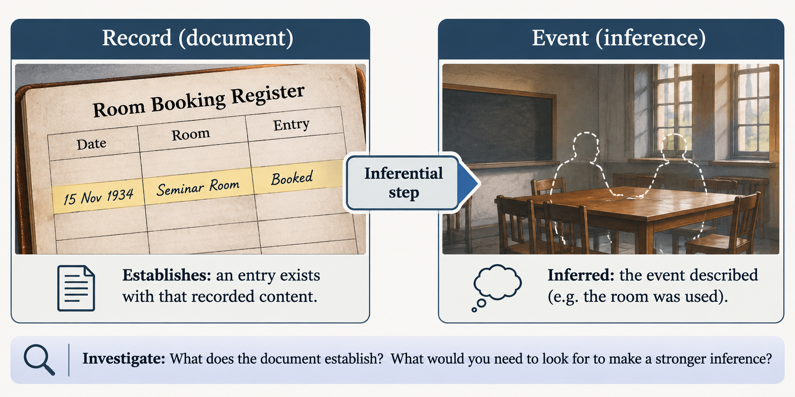

Examine the Archive Evidence
Blackthorn University, Thursday 15 November 1934. Rain darkens the windows of the Natural Philosophy Building. Professor Vale's valuable scientific notebook has vanished from a locked archive. Three authorised keyholders visited the room, but the evidence is less straightforward than it first appears. Before investigating anyone's movements, establish what the surviving records and statements actually tell you.
Treat every source as evidence for a specific proposition rather than as an automatically trustworthy or untrustworthy whole. Separate the existence of a statement or record from the truth of everything it appears to imply.
Identify an interpretation you initially found convincing. Explain which observation supports it and what additional assumption is needed to reach that interpretation.
Explore the idea

An investigation depends on relationships between sources, observations, interpretations and uncertainty. A source may reliably establish one narrow proposition while leaving a broader interpretation unproved.
Documented information is information preserved in a record. Subject to authenticity, a document establishes what was recorded, but not necessarily that every recorded event occurred exactly as described.
Reported observation is something a person says they saw, heard or otherwise perceived. It establishes the content of their account, not automatically the accuracy of their perception or memory.
Inference is an interpretation drawn from one or more pieces of evidence. It connects an observation to an explanation and may depend on assumptions that need testing.
Unresolved uncertainty is a question the available evidence cannot yet answer with adequate support. Recognising uncertainty is part of sound reasoning, not a failure to reach a conclusion.
Consider a neutral example. A laboratory booking sheet contains the entry 'Room occupied, 2:00 p.m.' This establishes that the booking sheet contains that entry. It does not, without additional evidence, establish that anyone entered the room at exactly 2:00 p.m. A colleague might separately report seeing someone there; that account adds evidence, but its precision and reliability still matter.
Treating the booking entry as definitive proof would collapse the distinction between record and event. Treating it as a recorded claim allows it to be compared with other sources. The governing principle is that the strength of a conclusion must not exceed the evidence supporting it.
A single source can therefore support different categories of claim. 'The register contains an entry' concerns documented information; 'the person definitely entered at that time' is a further inference. Classify the precise claim, not merely the type of document containing it.
Your task
Revising against
Blackthorn University, 15 November 1934
All institutions, characters, records and events in this investigation are fictional. The following documents are simulated evidence.
Rain beats against the tall windows of the Natural Philosophy Building. Shortly after six o'clock on Thursday evening, Professor Edmund Vale's valuable scientific notebook is reported missing from the departmental archive. The notebook contains unpublished observations from several years of experimental work.
The archive occupies a small ground-floor room with one usable entrance. Its heavy wooden door is secured by a manually operated key lock: closing the door does not automatically lock it. Three authorised keyholders possess keys. No other authorised keyholders are listed.
- Dr Eleanor Marsh: Senior Lecturer in Natural Philosophy.
- Mr Thomas Reed: Departmental Secretary and catalogue administrator.
- Miss Clara Whitfield: Research Assistant to Professor Vale.
The notebook was normally stored inside archival box V-17, on the second shelf beside the east wall.
Document 1: Archive access register
Register maintained beside the archive entrance. Times were entered using the corridor clock. These are the original recorded readings.
| Keyholder | Arrival recorded | Departure recorded |
|---|---|---|
| Dr Eleanor Marsh | 4:05 p.m. | 4:32 p.m. |
| Mr Thomas Reed | 4:35 p.m. | 4:55 p.m. |
| Miss Clara Whitfield | 5:12 p.m. | 5:28 p.m. |
The register contains no other Thursday afternoon entries. Its entries have not been independently verified against another clock.
Document 2: Witness statements
Dr Eleanor Marsh — statement taken Thursday evening
> I went into the archive to consult some older experimental notes. Box V-17 was on its usual shelf. I did not open it or check the notebook inside. I left after finishing my work.
Mr Thomas Reed — statement taken Thursday evening
> I visited to check the catalogue labels. I remember seeing V-17 in its place, but I cannot say whether Professor Vale's notebook was inside. I did not examine the contents.
Miss Clara Whitfield — statement taken Thursday evening
> I was looking for a reference in the archive. I remember handling V-17 and thinking it unusually light. I put it back. Afterwards I went to the library, where I spoke briefly to Mr Bell.
Mr Arthur Bell — library assistant, statement taken Friday morning
> Miss Whitfield came to the library yesterday afternoon. I recall speaking to her at about twenty past five, though I did not write down the time. I remember looking towards the library clock around then.
Mr Samuel Pike — building attendant, statement taken Thursday evening
> I noticed someone wearing a dark coat near the passage to the archive late in the afternoon. I was carrying equipment and did not get a clear look at the person's face. I cannot identify who it was or give an exact time.
Document 3: Discovery and physical observations
Initial inspection notes, Thursday evening.
- Professor Vale's notebook was discovered missing shortly after 6 p.m.
- Box V-17 remained on its usual shelf but was empty when inspected.
- A narrow torn strip of blue paper was found beneath the archive desk. No writing or identifiable marks were recorded on it.
- Pale grit was visible on the floor near the archive doorway. The inspection did not establish when it arrived or who brought it there.
- No broken lock or damaged door was recorded.
Your investigative starting point
The file contains documents, witness recollections and physical observations. Some claims concern what someone recorded or perceived; others concern what might have happened. Your first task is to establish which is which, without deciding who removed the notebook.
| Source and precise claim | Category (D/O/I/U) | What the source directly supports | Further inference, assumption or limitation |
|---|---|---|---|
What to produce
An evidence classification table containing at least six source-grounded claims, each with an appropriate category and concise justification. At least three entries distinguish the source's direct evidential contribution from an unsupported or incompletely supported inference. Two uncertainties are identified without treating missing information as proof. More than one defensible classification is acceptable where the learner clearly distinguishes the claim's wording from the underlying source.
Identify two important uncertainties that should remain open as the investigation proceeds.
Your draft is saved on this device when possible. It is not submitted.
Check your response
Back to your task (Examine the Archive Evidence)
Complete your response first, then use this material to check or improve it.
Review your answer
Criterion 1 of 4
Have you represented each selected source faithfully?
Show guidance for criterion 1
Why this matters
Changing a witness's wording or a record's precision can turn limited evidence into an apparently stronger claim.
What to look for
- A. Each entry identifies a recognisable source and a specific claim.
- B. Approximate times and expressions of uncertainty remain qualified.
If something is missing
- Missing A: Locate the exact register entry, statement or inspection observation and record the particular claim you are classifying.
- Missing B: Restore qualifiers such as 'about', 'recall' or 'cannot identify' wherever your paraphrase has made the source more definite.
Criterion 2 of 4
Have you distinguished records and reported observations from your own inferences?
Show guidance for criterion 2
Why this matters
Without this distinction, the classification may treat testimony or an administrative record as independent verification of the event described.
What to look for
- A. The category applies to the precise proposition rather than merely the source type.
- B. Direct evidential support is described separately from a possible explanation.
If something is missing
- Missing A: Rewrite any broad claim as a precise proposition, then reconsider whether it describes a record, a witness account or an inferred event.
- Missing B: In the support column, state what the source records or reports; move any explanation of what happened into the inference column.
Criterion 3 of 4
Have you exposed assumptions behind stronger interpretations?
Show guidance for criterion 3
Why this matters
An unacknowledged assumption can make a plausible interpretation appear established.
What to look for
- A. At least three entries identify a step beyond the directly recorded or reported information.
- B. Physical traces are not attributed to an individual without identifying evidence.
If something is missing
- Missing A: For three claims, ask what additional fact would need to be true for your stronger interpretation to follow, and record that assumption.
- Missing B: Where you connect an object or trace to a person, distinguish the observed feature from the unverified link to that individual.
Criterion 4 of 4
Have you preserved uncertainties that the available evidence cannot resolve?
Show guidance for criterion 4
Why this matters
Prematurely closing evidential gaps can bias every later stage of the investigation.
What to look for
- A. Two unresolved questions are stated as questions rather than accusations.
- B. Each uncertainty explains which necessary evidence is missing or insufficient.
If something is missing
- Missing A: Recast any premature conclusion as a question about an event, timing, identity or source reliability that remains unverified.
- Missing B: Identify the specific observation, verification or corroboration that would be needed to answer each question.